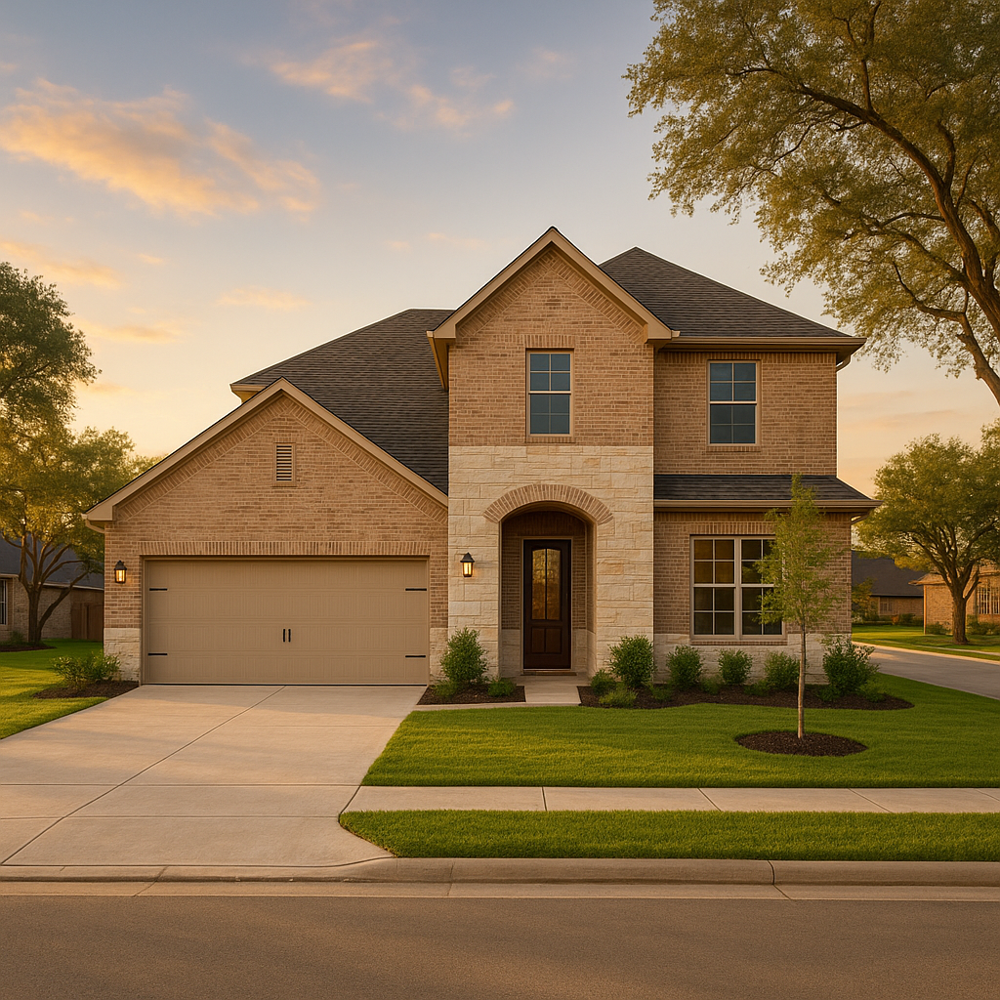

I'm Bond Peter Njoku (NMLS #2670329), and if you're shopping new construction anywhere in DFW this month, you're looking at a real, recurring pattern: end-of-quarter incentive packages — including September's — tend to run 20–40% richer than what the same builder offered in July or August, as sales teams push to hit quarterly closing targets. Typical DFW builder incentive packages run $8,000–$25,000 in value, with some master-planned communities offering $25,000–$40,000+ in "flex cash." Plenty has already been written about which incentive type is the best deal from a negotiation standpoint. What I want to walk you through instead is the part a real estate agent can't: how these incentives actually run through your loan.
The three incentive types, and how each one touches your financing
| Incentive type | How it's structured | Effect on your loan |
|---|---|---|
| Rate buydown (2-1 or permanent) | Builder pays to lower your rate temporarily or for the life of the loan | Counts as a seller concession against your loan program's cap |
| Closing cost credit | Builder covers some or all of your closing costs | Also a seller concession — stacks with a buydown against the same cap |
| Price reduction | Builder lowers the purchase price directly | Doesn't count as a concession — lowers your loan amount and down payment need instead |
Why the seller-concession cap matters more than the incentive's sticker number
A builder can advertise a $25,000 incentive, but if it's structured as a rate buydown plus closing cost credit, it's a seller concession — and every loan program caps how much of the purchase price a seller (including a builder acting as seller) can contribute. FHA allows up to 6% of the purchase price regardless of down payment. Conventional loans cap concessions at 3% with less than 10% down, 6% with 10–24% down, and 9% with 25% or more down. VA caps certain seller-paid items at 4%. On a $380,000 new-construction purchase with 5% down on conventional financing, your cap is 6% — $22,800 — so a $25,000 incentive structured entirely as concessions would actually exceed what your loan allows, and the excess simply can't be applied.
Builder's preferred lender vs. bringing your own
Here's the tradeoff builders don't spell out clearly: the full incentive amount is often only available through the builder's in-house or preferred lender. Bring an outside lender, and you may get a reduced incentive — or none. That doesn't automatically mean the builder's lender is the better deal. You're trading a larger dollar incentive for less ability to shop your rate, and sometimes a higher rate offsets a chunk of what the incentive appears to save you. I run both quotes side by side with actual numbers before recommending either path.
Show me the real math: $380,000 DFW starter home
Take a $380,000 new-construction purchase at a 7.00% market rate — the payment runs about $2,528 a month in principal and interest. A builder-funded 2-1 temporary buydown drops that to roughly $2,158 in year one (5.5%) and $2,278 in year two (6.0%), before returning to the full $2,528 payment in year three and beyond. Compare that against $15,000 in flex cash applied to closing costs and a permanent 0.375% rate reduction instead — a smaller upfront payment drop, but savings that continue every month for the full 30-year term rather than reverting after two years.
Named scenario: a Forney first-time buyer choosing between two incentive structures
I'm working with a first-time buyer in Forney purchasing a new-construction home for $350,000 with 3.5% down on FHA financing. The builder offered two paths: a $15,000 flex-cash package she could apply toward a 2-1 temporary buydown and closing costs, or a smaller $9,000 package applied entirely to a permanent 0.375% rate reduction. Because her FHA concession cap at 3.5% down is 6% of purchase price — $21,000 — both offers fit comfortably under her limit. We ran the math together: the temporary buydown gives her breathing room in years one and two while she's also furnishing the new home, while the permanent reduction saves less immediately but compounds over 30 years. She chose the temporary buydown, specifically because her income is set to rise within two years as she finishes a certification program — a case where the "smaller but permanent" option wasn't actually the better fit for her real timeline.
How do I get started evaluating a builder incentive in DFW?
Bring me the builder's incentive sheet before you sign anything. I'll check it against your loan program's concession cap, run the builder-lender numbers against an independent quote, and show you the real month-by-month payment difference — not just the incentive's advertised dollar value.
Frequently Asked Questions
Does a builder's rate buydown count against my seller concession limit?
I'm Bond Peter Njoku (NMLS #2670329) and yes — a builder-funded rate buydown is a seller concession under your loan program's rules, so it counts toward the same cap as closing cost credits. FHA caps total seller concessions at 6% of the purchase price regardless of down payment, conventional loans cap at 3% with less than 10% down up to 9% with 25% or more down, and VA caps certain seller-paid items at 4%. If a builder offers you more than your cap allows, the excess simply can't be applied — I check this before you sign anything. Call or text me at 469-545-7180 and I'll calculate your specific limit.
Do I have to use the builder's preferred lender to get their incentive?
I'm Bond Peter Njoku (NMLS #2670329). Often the full incentive amount is only available through the builder's in-house or preferred lender, while bringing an outside lender like me may still get you a reduced version of the incentive or none at all, depending on the builder's agreement. The tradeoff is real: the builder's lender may offer a bigger dollar incentive, but you lose the ability to shop your rate and terms independently. I'll run both scenarios side by side with real numbers before you decide which route saves you more. Call or text me at 469-545-7180 and I'll get the actual figures from the builder's lender to compare against mine.
Is September really a better time to negotiate builder incentives in DFW?
I'm Bond Peter Njoku (NMLS #2670329) and yes, based on what I'm seeing in the market right now. End-of-quarter months — including September — tend to bring builder incentive packages that run 20-40% richer than mid-quarter offers, since builders and their sales teams are working against quarterly closing targets. That doesn't mean every community is equally motivated, but it's a real, recurring pattern worth timing your offer around if your move-in timeline has any flexibility. Call or text me at 469-545-7180 and I'll help you time your offer with your builder's sales calendar in mind.
Should I take a rate buydown or cash toward closing costs?
I'm Bond Peter Njoku (NMLS #2670329). A permanent rate buydown saves you money every month for the life of the loan, which adds up to more total savings if you plan to stay long-term. Cash toward closing costs or a temporary 2-1 buydown preserves more of your reserves up front, which matters more if you're cash-tight at closing. I run both scenarios against your actual budget and timeline rather than picking one as a blanket rule — call or text me at 469-545-7180 and I'll show you the real numbers for your situation.
Get the builder's incentive sheet checked before you sign.
I'm Bond Peter Njoku (NMLS #2670329). Let's run the real financing math on your new-construction incentive before you commit to the builder's lender. Call or text me at 469-545-7180, message me on WhatsApp, or start your pre-approval online.